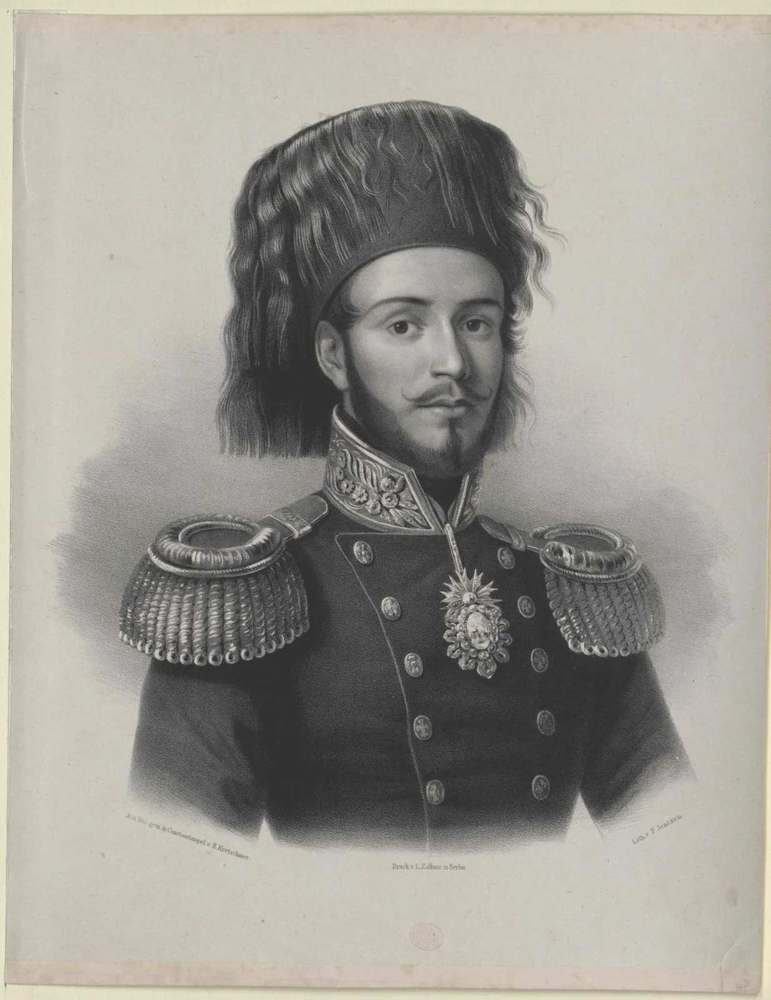
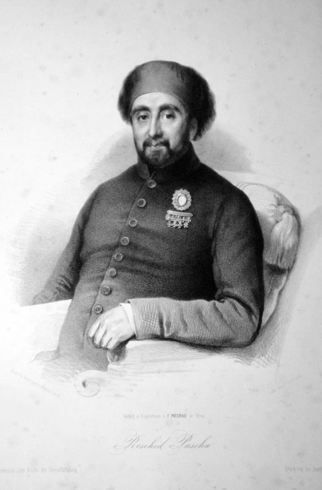
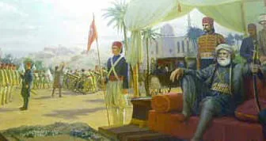
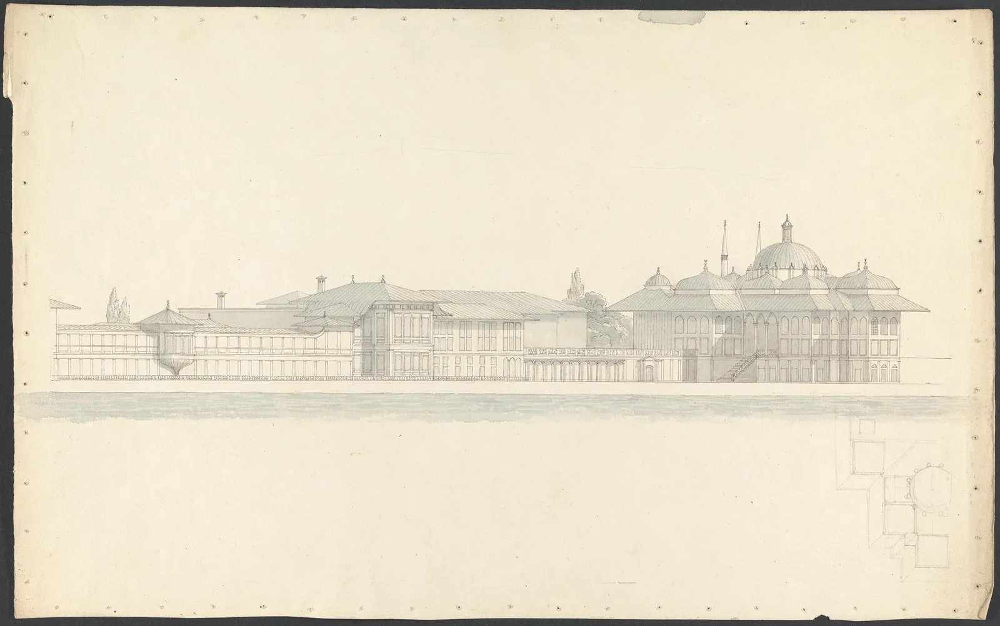
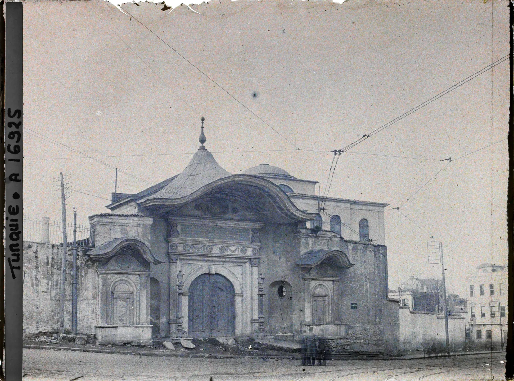
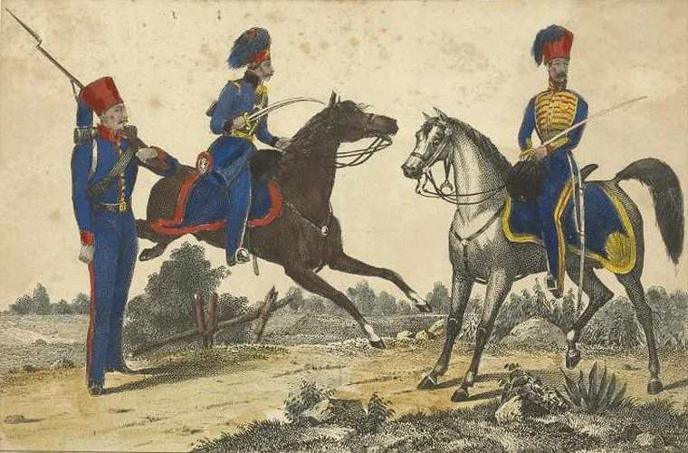
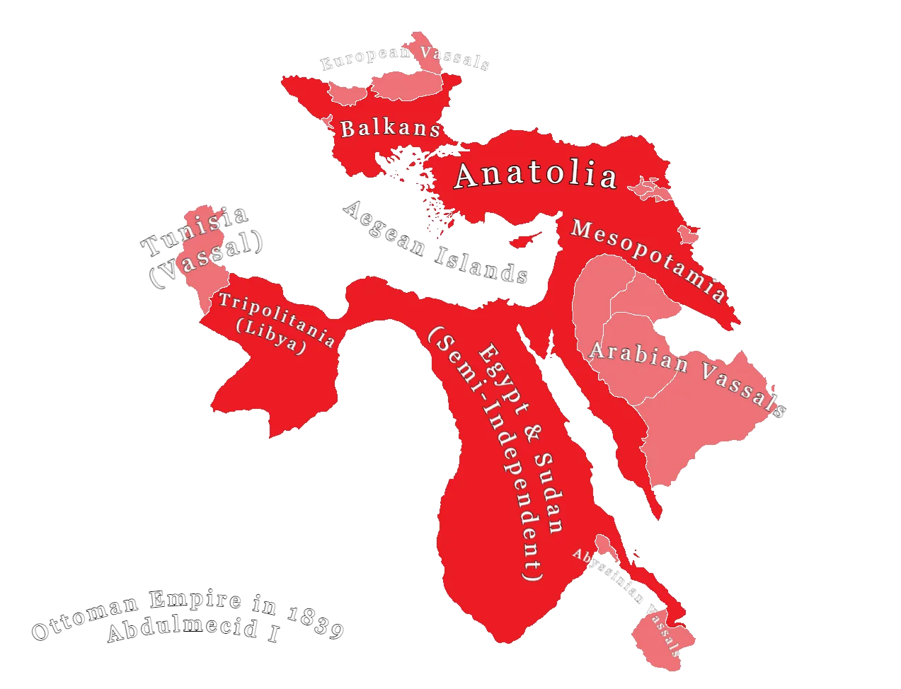

Tanzimat Fermanı, 3 Kasım 1839’da Sultan Abdülmecid adına Hariciye Nazırı Mustafa Reşid Paşa tarafından Gülhane’de okunan ve can, mal ve namus güvenliği; vergilerin belirli kurallara bağlanması; askerlik sisteminin düzenlenmesi ve yargılamasız ceza verilmemesi gibi temel ilkeleri açıklayan padişah fermanıdır.
Ferman yalnız Avrupa devletlerini memnun etmek amacıyla ilan edilmiş bir dış politika belgesi değildi. Osmanlı yönetiminin vergi toplama, askerlik, taşra idaresi, müsadere, hukuk güvenliği ve merkezî otorite alanlarında yaşadığı sorunlara cevap verme girişimiydi. Bununla birlikte Avrupa diplomasisi ve özellikle Mısır Meselesi de ilan ortamından ayrı düşünülemez. 1839’un önemi, bu iç ve dış baskıların aynı anda yoğunlaşmış olmasıdır.
Tanzimat Fermanı Nedir?
Fermanın tarihsel önemi, ilan ettiği her ilkenin eksiksiz uygulanmış olmasında aranamaz. Uygulamada ciddi dirençler, geri adımlar ve başarısız denemeler yaşandı. Daha kalıcı değişim, yönetimin kullandığı dildeydi. Padişahın tebaasına adalet dağıtması düşüncesinin yanına, yöneticilerin de ilan edilmiş kurallara uyması; can, mal, vergi, askerlik ve ceza gibi alanların kanunlarla düzenlenmesi vaadi yerleşiyordu.
Metin, devletin geçmişte şeriat ve kanunlara bağlı kaldığı için güçlü olduğunu, bu düzenden uzaklaşılmasıyla zayıfladığını söyleyen geleneksel bir meşruiyet diliyle başlar. Ardından yeniden güçlenmek için yeni kanunlara ihtiyaç bulunduğunu belirtir. Bu kanunların temel konuları can, mal, ırz ve namus güvenliği, vergi ve askerliktir. İltizamın sakıncaları eleştirilir; suç isnadı altındaki kişinin açıkça yargılanmadan cezalandırılmaması gerektiği vurgulanır.
Bugünkü ders kitaplarında “Tanzimat Fermanı’nın maddeleri” diye sıralanan ilkeleri, 3 Kasım günü yürürlüğe girmiş ayrıntılı kanunlar sanmamak gerekir. Ferman bir program açıklıyordu. Ceza, vergi, askerlik ve idareyle ilgili somut mevzuatın önemli bölümü daha sonra hazırlandı. 1840 Ceza Kanunnâmesi bunun erken örneklerinden biridir.
“Tanzimat Fermanı”, “Gülhane Hatt-ı Hümayunu” ve “Gülhane Hatt-ı Şerifi” farklı üç reform belgesi değildir. Bunlar aynı 1839 metni için kullanılan adlandırmalardır. “Tanzimat-ı Hayriye” ise daha geniş ıslahat anlayışı ve zamanla bu reformların uygulandığı dönem için kullanılan bir ifadedir.
Tanzimat Ne Demektir?
“Tanzimat”, Arapça “tanzim” kelimesinin çoğuludur; düzenlemeler ve yeniden düzenlemeler anlamına gelir. Osmanlı tarihindeki kullanımı tek bir fermanı değil, devletin mülkî, idarî, malî ve hukukî yapısında yürütülen daha geniş yeniden düzenleme sürecini anlatır.
Bu nedenle Tanzimat Fermanı ile Tanzimat Dönemi aynı şey değildir. Ferman 3 Kasım 1839 tarihli belirli bir belgedir. Tanzimat Dönemi ise tarih yazımında çoğunlukla 1839’dan 1876 Kanun-ı Esasi’sine kadar uzanan daha geniş reform çağını tanımlamak için kullanılır.
Tanzimat’ın hazırlıklarını 1839 sabahında başlatmak da yanıltıcıdır. III. Selim’in askerî ve idarî reformları, II. Mahmud’un merkezîleşme politikası, nezaretlerin kurulması, memuriyet düzeninin değiştirilmesi ve Meclis-i Vâlâ gibi kurumların ortaya çıkışı 1839 sonrasındaki düzenlemelere zemin hazırladı. Ferman bu birikimi yeni bir siyasi ve hukukî beyan içinde topladı.

Tanzimat Fermanı’ndan Önce Osmanlı Devleti’nin Durumu
Tanzimat’ın neden gerekli görüldüğünü anlamak için II. Mahmud dönemine bakmak gerekir. Devletin temel meselelerinden biri merkezî hükümetin imparatorluğun her bölgesinde aynı ölçüde etkili olamamasıydı. Balkanlar ve Anadolu’da âyanlar, güçlü aileler, valiler ve farklı yerel aktörler vergi, asker ve idare üzerinde önemli nüfuza sahipti. İstanbul’un amacı yalnız Avrupa’dan kurum almak değil, kendi emirlerini taşrada daha düzenli uygulatabilecek bir devlet yapısı oluşturmaktı.
1808’deki Sened-i İttifak bu güç ilişkilerinin dikkat çekici ürünlerinden biridir. Merkez ile âyanlar arasında karşılıklı yükümlülükler öngören belge daha sonra anayasal gelişmeler tartışmasında önemli yer edindi. Onu modern bir anayasa saymak ne kadar sorunluysa Tanzimat’ın basit öncülü gibi görmek de yetersizdir. Yine de hükümdarlık yetkisi, devlet görevlilerinin davranışı ve yazılı taahhüt bakımından iki metin karşılaştırılabilir.
- Mahmud’un en sert merkezîleşme hamlesi 1826’da Yeniçeri Ocağı’nın kaldırılmasıydı. Ardından kurulan yeni ordunun insan ve para ihtiyacı, askerlik ve vergi sisteminin daha düzenli hâle getirilmesini zorunlu kılıyordu. Merkezîleşme yalnız siyasi iradeyle gerçekleşmiyordu; devletin kimden ne kadar vergi alacağını, kimi askere çağıracağını ve taşradaki görevlileri nasıl denetleyeceğini bilmesi gerekiyordu.
Vergi toplama sistemi ciddi tartışma konusuydu. İltizamda belirli vergi gelirlerini toplama hakkı mültezimlere bırakılıyor, devlet gelir elde ederken tahsilat yerel aracılar üzerinden yürüyordu. Sistem pratik avantajlara sahipti; fakat vergi yükünün denetlenmesi, mültezimlerin kazancı ve halkın uğradığı baskılar uzun süredir eleştiriliyordu. Tanzimat kadroları merkezî devletin gelirleri daha doğrudan bilmesini ve toplamasını istiyordu.
Müsadere meselesi mülkiyet güvenliği bakımından önem taşıyordu. Devlet hizmetindeki kişilerin mallarına ölüm veya görevden düşme sonrasında el konulabilmesi, servetin mirasçılara geçişini belirsizleştirebiliyordu. II. Mahmud döneminde müsaderenin sınırlandırılması yönünde adımlar atılmıştı. Tanzimat Fermanı mal güvenliği ve mirasın korunmasını daha genel güvence dili içinde ifade etti.
Osmanlı Devleti aynı zamanda ağır dış krizlerle karşı karşıyaydı. 1821’de başlayan Yunan İsyanı uluslararası meseleye dönüştü; 1827 Navarin olayı ve 1828-1829 Osmanlı-Rus Savaşı askerî kırılganlığı gösterdi. Yunanistan’ın bağımsızlığı, Avrupa güç dengesi ile imparatorluk içindeki milliyetçi hareketlerin nasıl birleşebileceğini ortaya koydu.
Daha tehlikeli kriz Mısır Valisi Kavalalı Mehmed Ali Paşa’dan geldi. Mehmed Ali Paşa’nın ordusu Osmanlı kuvvetlerini yenerek Anadolu’ya ilerledi. 1833’teki düzenleme sorunu geçici olarak yatıştırdı, fakat çekişme bitmedi. 24 Haziran 1839’da Nizip’te Osmanlı ordusu yeniden ağır yenilgi aldı. II. Mahmud 1 Temmuz’da öldü ve genç Abdülmecid böylesine ağır kriz ortamında tahta çıktı.
Osmanlı donanmasının kısa süre sonra Mısır’a götürülmesi durumu daha da ağırlaştırdı. Devlet, kendi valisini tek başına yenemediği gibi Avrupa güçlerinin müdahalesine ihtiyaç duyuyordu. İngiltere, Rusya, Avusturya, Prusya ve Fransa’nın Doğu Akdeniz’deki farklı çıkarları Mısır Meselesi’ni uluslararası diplomasinin merkezine taşımıştı.
Tanzimat bu nedenle ani bir “Batılılaşma kararı” değildi. Devlet hem içeride daha etkin vergi ve asker toplamak, taşra yönetimini denetlemek ve keyfî uygulamaları azaltmak hem dışarıda meşruiyetini ve büyük devletlerin desteğini güçlendirmek zorundaydı. Reform ile devletin hayatta kalma kaygısı birbirinden ayrı değildi.

Mustafa Reşid Paşa Tanzimat’ı Tek Başına mı Hazırladı?
Mustafa Reşid Paşa Tanzimat Fermanı’nın hazırlanması ve ilanında merkezî bir isimdi. Avrupa’da elçilik yapmış, Londra ve Paris diplomasisini yakından tanımış, Hariciye Nazırı olarak Mısır krizinin uluslararası boyutuyla doğrudan ilgilenmişti. Fermanı Gülhane’de okuyan kişi de oydu. Bu yüzden Tanzimat’ın adı onunla güçlü biçimde özdeşleşti.
Fakat reform programını tek bir devlet adamının zihninden çıkmış proje gibi anlatmak süreci daraltır. Abdülmecid’in 17 Temmuz 1839 tarihli cülus hattında kanuna ve hakkaniyete uyulması, rüşvet ve zulmün önlenmesi, Müslüman ve gayrimüslim tebaanın can ve mal güvenliğinin sağlanması gibi daha sonra Gülhane metninde karşılaşılacak ilkeler bulunuyordu. Mustafa Reşid Paşa ise Londra’dan bunun ardından İstanbul’a dönmüştü.
Ferman öncesinde Sultan Abdülmecid’in emriyle Sadrazam Koca Hüsrev Paşa başkanlığında Bâbıâli’de geniş bir meşveret meclisi toplandı. Otuz sekiz yüksek bürokrat ve ilmiye mensubunun katıldığı görüşmelerde kabul edilen esaslarla Gülhane metnindeki ilkeler büyük ölçüde örtüşüyordu. Meclis mazbatasını imzalayanların önemli bölümünün ulema mensubu olması, reform sürecini “Batıcı bürokratlar ile bütünüyle karşı duran ulema” biçiminde okumayı da güçleştirir.
Bu tablo Mustafa Reşid Paşa’nın önemini azaltmaz. Onun diplomatik tecrübesi, reformların formüle edilmesi ve uygulanması için yürüttüğü mücadele Tanzimat’ın yönünü etkiledi. Fakat “Reşid Paşa Avrupa’dan geldi, tek başına ferman yazdı ve padişaha kabul ettirdi” biçimindeki hikâye, II. Mahmud döneminden devralınan kurumları ve Osmanlı bürokrasisi içindeki tartışmaları görünmez kılar.

Tanzimat Fermanı Neden İlan Edildi?
“Tanzimat Fermanı neden ilan edildi?” sorusuna tek nedenli cevap vermek kolay, fakat eksiktir. İç reform ihtiyacı ile dış politika baskısını birbirinden ayırıp hangisinin “gerçek sebep” olduğunu seçmek yerine ikisinin nasıl birleştiğine bakmak gerekir.
Merkezî devlet açısından en somut ihtiyaçlardan biri gelirlerin düzenli toplanmasıydı. Ordu, bürokrasi ve yeni kurumlar para gerektiriyordu. Verginin keyfî veya öngörülemez algılanması halkın devlete bağlılığını zedeliyor; yerel aracılar merkez ile vergi mükellefi arasındaki kaynakların bir bölümünü kontrol ediyordu. Gelire göre ve belirli esaslarla vergi alınması vaadi hem adalet iddiası hem devlet kapasitesi projesiydi.
Askerlikte benzer sorun vardı. Yeni ordunun düzenli insan kaynağına ihtiyacı bulunuyordu; buna karşılık belirsiz sürelerle askerlik yapılması üretim ve aile hayatını etkiliyordu. Ferman asker alma usulünün ve hizmet süresinin düzenlenmesini vaat ederek devletin asker ihtiyacı ile tebaanın öngörülebilirlik talebi arasında denge kurmaya çalıştı.
Can ve mal güvenliği de merkezîleşmenin parçasıydı. Bir devletin taşradaki görevlilerinin keyfî ceza ve tahsilat uygulamalarını sınırlaması yalnız bireyi korumak anlamına gelmiyordu. Aynı zamanda yerel yöneticilerin bağımsız hareket alanını daraltıyor ve meşru zor kullanma yetkisini merkezin belirlediği kurallara bağlıyordu.
Dışarıda 1839 Mısır krizi olağanüstü baskı yaratmıştı. Nizip yenilgisi Osmanlı’nın askerî durumunu gözler önüne sererken İstanbul, Mehmed Ali Paşa karşısında Avrupa diplomasisinin desteğini arıyordu. Mustafa Reşid Paşa’nın özellikle İngiltere ile ilişkileri bu ortamda önem kazandı. Avrupa kamuoyunda ve diplomasisinde Osmanlı Hristiyanlarının durumu da müdahale tartışmalarının konularından biriydi.
Buradan “ferman İngilizlerin emriyle ilan edildi” sonucuna atlamak için yeterli kanıt yoktur. Reformun birçok ilkesi II. Mahmud dönemindeki düzenlemelerle ve Abdülmecid’in Reşid Paşa İstanbul’a dönmeden önce yayımladığı cülus hattıyla bağlantılıydı. Öte yandan Mısır Meselesi ve Avrupa desteği ihtiyacını önemsiz saymak da gerçekçi değildir.
İç ve dış nedenler birbirini tamamlıyordu. Devlet Avrupa müdahalesini azaltmak istiyorsa kendi tebaası üzerindeki yönetimini daha meşru ve öngörülebilir göstermek zorundaydı. Aynı reformlar vergi ve askerlik düzenini merkezîleştirerek devletin içerideki kapasitesini artırabilirdi. Tanzimat’ın hem güvence hem merkezîleşme projesi olması bundan kaynaklanır.

Tanzimat Fermanı Nasıl ve Nerede İlan Edildi?
3 Kasım 1839’daki törenin yeri Topkapı Sarayı’nın dış bahçelerinden Gülhane’ydi. Hariciye Nazırı Mustafa Reşid Paşa fermanı burada yüksek sesle okudu. Sultan Abdülmecid Gülhane Kasrı’ndan töreni takip etti. Vükelâ, devlet ricali, ulema, Rum ve Ermeni patrikleri, hahambaşı, esnaf temsilcileri ve yabancı elçiler hazır bulundu.
Katılımcı profili tesadüf değildi. Fermanın muhatabı yalnız devlet memurları değildi; farklı dinî toplulukların temsilcileri ve şehirli gruplar da yeni düzenin kendilerine duyurulduğunu görüyordu. Yabancı elçilerin varlığı ilanı uluslararası bakımdan görünür kılıyordu. Mısır Meselesi’nin Avrupa diplomasisini meşgul ettiği bir anda bu görünürlük ayrıca anlamlıydı.
Fermanın sonunda yeni kanunların hazırlanacağı, bunların ilgili meclislerde görüşüleceği ve padişahın ilan edilen esaslara uyacağı bir çerçeve çizildi. Devlet görevlilerinin de bu esaslara bağlılığı vurgulandı. Böylece metin soyut iyi yönetim temennisinden gelecekteki kanunlaştırma faaliyetlerine uzanan program niteliği kazandı.
Tören hakkında sonradan üretilen dramatik sahnelerden kaçınmak gerekir. Reşid Paşa’nın ses tonu, kalabalığın her cümleye verdiği tepki veya padişahın zihninden geçenler hakkında güvenilir kayıt olmadan ayrıntılı hikâyeler kurmak tarih değildir. Bildiğimiz şey törenin kamusal bileşimi, metnin içeriği ve ilan sonrasında başlayan kurumsal düzenlemelerdir.
Tanzimat Fermanı’nın Maddeleri Nelerdir?
Tanzimat Fermanı’nın maddeleri denildiğinde ilk sırada can, mal, ırz ve namus güvenliği gelir. Bu vaat, devletin tebaasının yaşamı ve mülkiyeti üzerinde keyfî müdahaleyi sınırlama iddiası taşıyordu. Güvenliğin olmadığı yerde insanların devlete ve memlekete bağlılığının zayıflayacağı düşüncesi metnin mantığında görülür.
Ceza konusunda temel ilke, yargılama olmadan kimsenin öldürülmemesi veya cezalandırılmamasıydı. Bugünkü anlamda bağımsız yargı sistemi kurulmuş değildi; fakat cezanın bir usule bağlanması devlet görevlilerinin kişisel kararlarıyla ceza vermesini sınırlama yönünde önemli beyandı. 1840 Ceza Kanunnâmesi gibi sonraki düzenlemeler bu alanı somutlaştırmaya çalıştı.
Vergilerin belirli ve düzenli esaslara bağlanması başka temel konuydu. Ferman iltizamın sakıncalarını açık biçimde eleştiriyordu. Amaç herkesin ödeme gücünün dikkate alındığı, devletin gelirini daha doğrudan görebildiği ve aracıların keyfî tahsilatının azaltıldığı sistem kurmaktı. Bunun uygulamasının ne kadar zor olduğu kısa sürede ortaya çıktı.
Askerlikte de belirlilik hedeflendi. Bir bölgeden ölçüsüz sayıda erkek alınmasının nüfusu ve üretimi zedeleyebileceği kabul ediliyor, asker alma usulünün ve hizmet süresinin düzenlenmesi isteniyordu. Böylece askerlik devletin sınırsız talebi olmaktan çıkarılıp kuralları belirlenmiş yükümlülüğe dönüştürülmeye çalışılıyordu.
Mal güvenliği mirasla bağlantılıydı. Suçlanan veya cezalandırılan kişinin malının ailesinden alınmasının onları da cezalandırdığı düşüncesi metinde yer buldu. Müsadere uygulamasının sınırlandırılması, mülkiyetin gelecek kuşağa aktarılabilmesi konusunda daha güçlü güvence sağlama yönündeydi.
Ferman hazırlanacak kanunların açık biçimde uygulanmasını ve devlet görevlilerinin de bu kurallara uymasını öngörüyordu. Hükümdar iradesi ortadan kalkmıyordu; fakat iradenin kanun yapma ve ilan edilen kanuna uyma taahhüdüyle ilişkilendirilmesi güçleniyordu.
Belgenin güvenceleri Müslüman ve gayrimüslim tebaayı kapsayan dille ilan edildi. Ancak buradan 1839’da bütün hukukî ve siyasi statü farklılıklarının ortadan kalktığı sonucu çıkmaz. Vergi, askerlik, kamu görevi ve cemaat statüsü gibi alanlarda farklılıklar devam etti. 1856 Islahat Fermanı’nın ayrıntılı eşitlik hükümlerini 1839 metnine taşımamak gerekir.
Bugün bu ilkeleri “insan hakları”, “hukuk devleti” veya “vatandaşlık” kavramlarıyla ilişkilendirmek mümkündür; fakat bunlar 1839 belgesinin kendi kavramsal dünyasıyla tamamen özdeş değildir. Ferman tebaadan söz ediyor, egemenliği millete devretmiyor ve temsilî siyasal sistem kurmuyordu. Modern terimler ancak tarihsel fark açık tutulduğunda açıklayıcıdır.
Ferman Padişahın Yetkilerini Gerçekten Sınırladı mı?
Bu sorunun cevabı tek kelimeye sıkıştırıldığında önemli ayrımlar kaybolur. Ferman padişah iradesiyle çıkarıldı. Onu hazırlayan seçilmiş bir kurucu meclis yoktu; padişahın üzerinde metni uygulamaya zorlayacak anayasa mahkemesi veya parlamenter denetim de bulunmuyordu. Abdülmecid egemenlik hakkını halka devretmedi.
Buna karşılık padişah kendi adına yayımlanan belgede yönetimin belirli esaslara uyacağını, yeni kanunlar çıkarılacağını ve devlet görevlilerinin bu kurallara bağlı kalacağını ilan ediyordu. Bu keyfîliğin sınırlandırılması yönünde siyaseten önemli taahhüttü. Padişahın iradesi kanunun kaynağı olmaya devam ederken iyi yönetimin ölçüsü giderek daha fazla ilan edilmiş genel kurallarla ifade ediliyordu.
“Padişah ilk kez kendi yetkilerini sınırladı” cümlesi dikkatle kullanılmalıdır. Osmanlı yönetiminde padişahın şeriat, kanun, örf ve bürokratik gelenekle ilişkisi Tanzimat’tan önce de vardı. 1808 Sened-i İttifak’ında II. Mahmud belirli yükümlülüklerin uygulanmasını üstlenmişti. Dolayısıyla 1839’u hiçbir geçmişi olmayan sıfır noktası gibi sunmak doğru olmaz.
Tanzimat’ın farklılığı, güvenlik, vergi, askerlik ve ceza alanındaki ilkeleri geniş bir ıslahat programı içinde kamusal biçimde ilan etmesi ve bunları takip edecek kanunlaştırma sürecine bağlamasıydı. Bu modern anayasal monarşi değildi; fakat Osmanlı anayasal gelişmelerinin sonraki aşamalarını anlamak için önemli basamaktı.
Tanzimat Fermanı Bir Anayasa mıydı?
Modern anlamda hayır. Tanzimat Fermanı anayasa değildi. Devlet organlarının görev ve yetkilerini ayrıntılı biçimde tanımlamıyor, yasama-yürütme ilişkisini anayasal çerçeveye oturtmuyor, seçim veya siyasal temsil sistemi kurmuyor ve egemenliğin kaynağını yeniden tanımlamıyordu.
Fermanın hukukî biçimi de bunu gösterir. Bir padişah iradesi olarak ilan edilmiş hatt-ı hümayundu. Yönetimin izleyeceği ilkeleri ve hazırlanacak kanunların esaslarını açıklıyordu. Bu nedenle “Osmanlı’nın ilk anayasası” ifadesi, anayasa kelimesi modern hukuk anlamında kullanılıyorsa yanıltıcıdır.
Buna rağmen anayasal gelişme tarihinde önemli sayılması çelişki değildir. Sened-i İttifak’taki yazılı taahhüt, Gülhane’de ilan edilen güvence ve kanun ilkeleri, 1856 Islahat Fermanı’nın daha ayrıntılı hükümleri ve nihayet 1876 Kanun-ı Esasi aynı belge türleri değildir; fakat yönetimin hukukî sınırlar ve temsil meselesiyle giderek daha yoğun uğraştığı uzun sürecin farklı aşamalarıdır.
1876 Kanun-ı Esasi devlet organları, meclis ve temel hükümler bakımından gerçek anayasal metin niteliğindeydi. Gülhane Hattı’nın önemi Kanun-ı Esasi’nin yaptığını kırk yıl önce yapmış olmasında değil, devletin yönetim meşruiyetini genel kurallar ve güvence vaatleri üzerinden yeniden ifade etmeye başlamasında aranmalıdır.
Tanzimat Fermanı Herkesi Eşit Hâle Getirdi mi?
Fermanın en çok yanlış aktarılan yönlerinden biri budur. Metin can, mal ve namus güvenliği gibi temel güvenceleri imparatorluğun tebaasına yönelik geniş bir dille ilan etti. Müslüman ve gayrimüslimlerin bu koruma çerçevesinin dışında bırakılmaması önemliydi.
Fakat 1839’da bütün dinî topluluklar modern vatandaşlık anlayışı içinde aynı hukukî ve siyasi statüye kavuşmadı. Osmanlı toplumu farklı cemaatlerin, hukuk uygulamalarının ve yükümlülüklerin bulunduğu yapıya sahipti. Askerlik ve buna bağlı vergiler, kamu görevlerine erişim ve bazı hukukî alanlarda farklılıklar devam etti.
Bu nedenle 1839’daki güvence dili ile 1856 Islahat Fermanı’nın hükümleri birbirine karıştırılmamalıdır. Islahat Fermanı Kırım Savaşı’nın sonundaki uluslararası ortamda özellikle gayrimüslim tebaanın statüsü, devlet hizmeti, eğitim, ibadet, cemaat kurumları ve eşitlik meselesi üzerine daha ayrıntılı hükümler içeriyordu.
Tanzimat’ın eşitlik yönü bir anda tamamlanmış sonuçtan çok sürecin parçasıydı. Devlet farklı dinlerden tebaayı ortak siyasal bağlılık içinde tutmaya çalışırken eski statü ve ayrıcalıkları dönüştürmek zorundaydı. Bu dönüşüm hem Müslüman hem gayrimüslim topluluklarda farklı beklentiler ve tepkiler doğurdu.

Tanzimat Fermanı Nasıl Uygulandı?
Fermanın gerçek sınavı Gülhane’de okunmasından sonra başladı. Verginin gelirle orantılı hâle getirilmesi için devletin insanların servet ve gelirini bilmesi, tahsilatı yapacak güvenilir memurlar bulması ve yerel güç odaklarının direncini aşması gerekiyordu. Dönemin ulaşım, haberleşme ve kayıt kapasitesi düşünüldüğünde bu son derece zor görevdi.
1840’ta Tanzimat’ın uygulandığı merkez bölgelerde iltizam kaldırıldı ve vergilerin devlet adına maaşlı muhassıllar tarafından toplanması denendi. Muhassıllık meclisleri oluşturuldu; yerel temsilcilerin de bulunduğu bu yapılar vergi ve idare işlerinde yeni düzen kurmayı amaçlıyordu. Teoride merkez mültezim aracılarını azaltacak ve gerçek vergi kapasitesini daha iyi görecekti.
Sonuç beklendiği gibi olmadı. Yeni teşkilat yeterince yerleşmeden eski tahsil sistemi kaldırıldığı için gelirlerin toplanmasında ciddi aksamalar yaşandı. Memurların tecrübesizliği, yerel ilişkiler, kayıt sorunları ve uygulamadaki karışıklık reformun maliyetini artırdı. Mart 1842’den itibaren muhassıllık sisteminden vazgeçildi ve iltizam yeniden kullanılmaya başlandı.
Bu geri dönüş Tanzimat’ın “iki yılda çöktüğünü” göstermez. Reform sürecinin deneme, başarısızlık ve yeniden düzenleme yoluyla ilerlediğini gösterir. Devlet iltizamı eleştirmiş olsa da onu ikame edecek idarî kapasiteyi emirle yaratamıyordu. Merkezîleşme isteği ile devletin fiilî kapasitesi arasındaki mesafe burada açıkça görülür.
Taşrada başka sorunlar da yaşandı. Ferman hükümlerinin uygulanmasını denetlemek için müfettişler gönderildi. Rumeli’de Ahmed Ârif Hikmet Bey’in teftişi gibi örnekler; vergi tahsili, emlak ve nüfus tahriri, yerel meclislerin oluşturulması ve memurlar arasındaki anlaşmazlıkların merkez için ciddi meseleler olduğunu gösterir.
Hukuk alanında kanunlaştırma hızlandı. 1840 Ceza Kanunnâmesi özellikle kamu görevlilerinin görevleri sırasında işleyebilecekleri suçlar dahil belirli suç ve cezaları düzenledi. Daha sonraki yıllarda yeni ceza, ticaret ve arazi düzenlemeleri geldi. Meclis-i Vâlâ reformların hazırlanması, idarî denetim ve hukukî düzenleme süreçlerinde önemli rol üstlendi.
Yerel meclislerin ortaya çıkışı dikkat çekiciydi. Bunlar bugünkü anlamda demokratik yerel yönetimler değildi; merkezî devletin taşrayı daha düzenli yönetme projesinin araçlarıydı. Buna rağmen yerel eşraf ve cemaat temsilcilerinin idarî süreçlerde yer alması, merkez ile taşra arasındaki ilişkiyi yeni kurumsal zemine taşıdı.
Reformların coğrafi uygulanması eşit değildi. Devlet her eyalette aynı anda aynı düzenlemeyi hayata geçiremedi. Bazı bölgelerin özel statüsü, güvenlik koşulları, yerel güç dengeleri ve personel yetersizliği uygulamayı farklılaştırdı. “Tanzimat 1839’da bütün Osmanlı ülkesinde başladı” ifadesi dönemlendirme için kullanılabilir; fakat aynı kuralların ertesi gün her köyde işlediği anlamına gelmez.
Tanzimat’a Kimler Karşı Çıktı ve Neden?
Tanzimat muhalefetini “yenilik düşmanı gericiler” başlığı altında toplamak, reformların kimi insanların çıkarlarını doğrudan etkilediğini gözden kaçırır. Merkezîleşme bir grubun güvence kazanması anlamına gelirken başka grubun gelir, nüfuz veya yetki kaybetmesine yol açabiliyordu.
Vergi toplama sisteminden kazanç sağlayan mültezimler için devletin tahsilatı doğrudan üstlenmesi ekonomik tehditti. Yerel yöneticiler ve güçlü aileler açısından merkezden gönderilen memurlar, yeni meclisler ve teftişler geleneksel hareket alanlarını daraltabilirdi. Reformun “adalet” olarak sunduğu şey, yerel güç sahibi açısından merkezî müdahale anlamına gelebiliyordu.
Ulemanın tutumu tek renk değildi. Fermanın ilanından önceki meşveret sürecinde ilmiye mensupları yer almış ve metin kendisini İslamî meşruiyet dilinden koparmamıştı. Dolayısıyla “ulema Tanzimat’a karşıydı” gibi toplu hüküm doğru değildir. Belirli düzenlemeler, özellikle sonraki eşitlik ve hukuk reformları farklı dinî ve hukukî tartışmalar doğurdu.
Gayrimüslim cemaatlerde de tek tepki yoktu. Güvence ve eşitlik yönündeki adımlar bazı kesimler için yeni imkânlar yaratırken cemaat içindeki geleneksel otoriteler devletin doğrudan bireyle ilişki kurmasından etkilenebiliyordu. Avrupa devletlerinin himaye politikaları ilişkileri daha karmaşık hâle getiriyordu.
Bürokrasi içindeki mücadeleler reformların yönünü etkiledi. Mustafa Reşid Paşa’nın görevden alınmaları ve geri dönüşleri Tanzimat kadrolarının yekpare olmadığını gösterir. Reformun hangi hızda, hangi dış ittifaklarla ve hangi idarî yöntemlerle yürütüleceği konusunda devlet adamları arasında görüş ve çıkar farkları vardı.
Bu nedenle Tanzimat karşıtlığını ideolojik “eski-yeni” savaşı gibi okumak yetersizdir. Reformlar soyut fikirler değil; vergi tahsilatını, memuriyetleri, yerel iktidarı, askerlik yükünü ve cemaat ilişkilerini değiştiren uygulamalardı. Direncin önemli bölümü bu somut sonuçlardan doğdu.
Tanzimat Fermanı Başarılı Oldu mu?
Başarıyı fermanın bütün vaatlerinin eksiksiz uygulanması olarak tanımlarsak cevap hayırdır. Vergi reformu ilk yıllarda ciddi sorun yaşadı, iltizam kısa sürede geri döndü, taşrada keyfî uygulamalar ortadan kalkmadı ve imparatorluğun bütün bölgelerinde aynı idarî düzen kurulamadı. Büyük devletlerin Osmanlı iç işlerine müdahalesi de sona ermedi.
Fakat başarıyı devletin yönetim biçiminde uzun vadeli dönüşüm yaratmak olarak ele alırsak tablo farklılaşır. Tanzimat yıllarında merkezî bürokrasi büyüdü; yeni meclisler, kanunlar, nezaretler ve taşra kurumları geliştirildi. Vergi, nüfus, arazi ve idare hakkında daha fazla bilgi toplamak devlet yönetiminin temel araçlarından biri hâline geldi.
Kanunlaştırma hareketi kalıcıydı. 1840 ve 1858 ceza düzenlemeleri, ticaret hukuku alanındaki değişiklikler, 1858 Arazi Kanunnâmesi ve daha sonraki Mecelle gibi çalışmalar aynı metnin doğrudan maddeleri değildi; fakat Tanzimat çağında yönetimin hukuk üretme biçiminin genişlediğini gösterir.
Tanzimat’ın başka sonucu devlet ile tebaa arasındaki ilişkinin ifade edilişinde görülür. Devlet eskiden de adalet iddiasına sahipti; Osmanlı siyasal geleneğinde hükümdarın adaleti temel meşruiyet unsurlarındandı. Yeni olan, güvenlik, vergi ve ceza gibi alanlarda belirli ilkelerin kamuya ilan edilmesi ve bu ilkelerin yeni kanunlarla somutlaştırılacağının taahhüt edilmesiydi.
Bunun paradoksal tarafı hak ve güvence diliyle merkezîleşmenin aynı anda ilerlemesidir. Verginin kurala bağlanması mükellefi keyfî tahsilattan korumayı amaçlarken devletin gelirleri daha yakından izlemesini sağlıyordu. Askerliğin düzenlenmesi hizmet süresini belirli hâle getirirken merkezin insan kaynağını daha sistemli seferber etmesine imkân veriyordu. Taşra meclisleri yerel katılım kanalı açarken merkezî denetimin de aracına dönüşüyordu.
Dolayısıyla Tanzimat’ı “özgürlük kazandı” veya “merkez baskısı arttı” seçeneklerinden biriyle açıklamak yerine ikisini birlikte görmek gerekir. 19. yüzyıl devletleşmesinin önemli özelliklerinden biri budur: bireye belirli güvenceler tanınırken devlet toplum hakkında daha fazla bilgi toplar, daha düzenli vergi alır ve daha doğrudan yönetir.
Tanzimat Fermanı ile Islahat Fermanı Arasındaki Fark
Tanzimat Fermanı ile Islahat Fermanı sık sık aynı belge sanılır. Oysa aralarında on yedi yıl vardır ve farklı siyasi ortamlarda ilan edilmişlerdir. Tanzimat Fermanı 3 Kasım 1839, Islahat Fermanı 18 Şubat 1856 tarihlidir. İkisi de Sultan Abdülmecid dönemine aittir.
1839 metni genel yönetim, can-mal-namus güvenliği, vergi, askerlik, yargılama ve kanunlaştırma ilkelerine odaklandı. 1856 belgesi ise özellikle gayrimüslim tebaanın statüsü, cemaat kurumları, devlet hizmeti, eğitim ve eşitlik meselelerinde daha ayrıntılı hükümler getirdi.
Uluslararası ortam da farklıydı. Tanzimat Fermanı Mısır krizinin en ağır döneminde ilan edilmişti. Islahat Fermanı ise Osmanlı Devleti’nin İngiltere ve Fransa’yla birlikte Rusya’ya karşı savaştığı Kırım Savaşı’nın sonunda, Paris Barış Konferansı öncesinde ortaya çıktı. Avrupa devletlerinin gayrimüslim tebaanın statüsüne ilişkin talepleri 1856 metninin hazırlanmasında çok daha doğrudan rol oynadı.
Bu yüzden 1839’a ait hükmü 1856’ya, 1856’daki ayrıntılı eşitlik düzenlemelerini de 1839’a taşımak Tanzimat tarihini bulanıklaştırır. İki belge aynı reform sürecinin parçalarıdır, fakat birbirinin kopyası değildir.
Tanzimat Dönemi Ne Zaman Başladı ve Ne Zaman Bitti?
Dönemin başlangıcı için en yaygın tarih 3 Kasım 1839’dur. Gülhane Hatt-ı Hümayunu’nun ilanı hem çağdaşlar hem sonraki tarih yazımı açısından yeni reform döneminin sembolik eşiği hâline geldi. Bununla birlikte 1839 sonrasında kurulan veya geliştirilen kurumların önemli kısmının temeli II. Mahmud döneminde atılmıştı.
Bitiş için çoğunlukla 1876 kullanılır. I. Meşrutiyet ve Kanun-ı Esasi’nin ilanı Osmanlı siyasal tarihinde farklı anayasal evrenin başlangıcı kabul edilir. Bu tarih de değişimin bir günde gerçekleştiği anlamına gelmez. Tanzimat kadroları, kurumları ve kanunlaştırma anlayışı sonraki dönemi etkilemeye devam etti.
Dönemlendirme analitik araçtır. 1839’dan önce reform yokmuş veya 1876’dan sonra Tanzimat mirası bitmiş gibi düşünülmemelidir. Osmanlı 19. yüzyılındaki dönüşüm padişahların ve fermanların tarihlerinden daha uzun kurumsal sürekliliğe sahiptir.
Tanzimat Fermanı’nın Osmanlı Tarihindeki Gerçek Önemi
Tanzimat Fermanı’nı ne kusursuz özgürlük bildirgesine ne de Avrupa devletlerine verilmiş boş tavize indirgemek gerekir. İki yorum da belgenin ortaya çıktığı devlet krizini ve sonrasındaki uygulamaları yeterince açıklamaz.
Fermanın birinci önemi merkezî devletin kendi yönetim sorunlarını açık biçimde tanımlamasıdır. Verginin düzensizliği, asker alımındaki belirsizlik, mal ve can güvenliği sorunu ve keyfî ceza yalnız ahlaki kusurlar olarak değil devletin güçlenmesini engelleyen yapısal meseleler olarak ele alındı. İyi yönetim ile devlet kapasitesi aynı program içinde buluştu.
İkinci önemli yön hukukun siyasi meşruiyetteki ağırlığının artmasıdır. Padişah egemenliğinden vazgeçmedi; fakat devletin görevlileriyle birlikte ilan edilmiş kanunlara uyacağına dair kamusal taahhütte bulundu. Bu parlamenter egemenlik değildi. Yine de yönetimin yalnız hükümdarın kişisel adaletine değil genel kuralların varlığına dayanması gerektiği düşüncesini güçlendirdi.
Üçüncü yön reformun merkezîleşmeyle ayrılmaz ilişkisidir. Tanzimat çoğu zaman hakların genişlemesi olarak anlatılır; fakat devletin taşrayı daha sıkı denetlemesi, vergi ve nüfus hakkında daha ayrıntılı bilgi toplaması ve yerel güçlerin yetkilerini sınırlaması da aynı sürecin parçasıdır. Tebaanın keyfî yerel uygulamalardan korunması ile merkezin güçlenmesi kimi zaman aynı düzenlemenin iki sonucuydu.
Dördüncü yön Osmanlı tebaasını daha ortak hukuk ve bağlılık çerçevesinde ele alma arayışıdır. Bu arayış 1839’da tamamlanmadı. Dinî ve hukukî farklılıklar sürdü; 1856’da yeni düzenlemeler gerekti; 19. yüzyıl boyunca Osmanlılık düşüncesi milliyetçilik, büyük devlet müdahalesi ve cemaat politikalarıyla sınandı. Fakat 1839 bu sürecin önemli eşiklerinden biridir.
Tanzimat’ın sınırları da öneminin parçasıdır. Muhassıllık deneyiminin başarısızlığı, merkezî hükümetin istediği düzeni taşrada hemen kuramadığını gösterdi. Reform metni çıkarmak, onu uygulayacak memur, kayıt, ulaşım, para ve yerel meşruiyeti üretmekten daha kolaydı. Osmanlı modernleşmesinin birçok sonraki problemi bu uygulama açığında görülebilir.
Bu nedenle Tanzimat Fermanı’nın tarihsel değerini “başarılı oldu mu?” sorusunun tek cevabında aramak yerine devletin kendisinden ne beklediğini nasıl değiştirdiğine bakmak daha açıklayıcıdır. 1839’dan sonra yönetim, keyfîliği azaltma ve tebaaya güvence verme iddiasını ilan edilmiş kurallar üzerinden daha açık biçimde savunmak zorundaydı. Uygulamanın bu iddiaya uymadığı her durumda devlet kendi ilan ettiği ölçülerle eleştirilebilir hâle geliyordu.
Ferman padişahın iktidarını ortadan kaldırmadı; iktidarın nasıl gerekçelendirileceğini değiştiren belgelerden biri oldu. Merkezî devlet bir yandan can ve mal güvenliği vaat ediyor, diğer yandan vergi, askerlik ve taşra üzerindeki kontrolünü artırıyordu. Bu iki eğilim birbirinin zıddı değil, Tanzimat devletinin aynı anda çözmeye çalıştığı iki sorundu.
Tanzimat’ın Mülkiyet Güvenliği ve Müsadere Açısından Anlamı
Tanzimat Fermanı’nın mal güvenliği vurgusu, bugünkü okuyucu için can güvenliği kadar çarpıcı görünmeyebilir. Oysa 19. yüzyılın ilk yarısındaki Osmanlı yönetim yapısı düşünüldüğünde mülkiyet meselesi, devlet ile yönetici zümre arasındaki ilişkinin merkezindeydi. Özellikle devlet hizmetinde bulunanların servetlerinin hangi ölçüde kişisel mülk sayılacağı ve ölüm ya da azil sonrasında mirasçılara geçip geçmeyeceği uzun süredir tartışmalıydı.
Müsadere, devletin belirli kişilerin mallarına el koyabilmesine imkân veren eski bir uygulamaydı. Her Osmanlı tebaasının malının keyfî biçimde her an alınabildiği gibi kaba bir tablo çizmek doğru değildir; uygulamanın kapsamı dönemlere, statülere ve siyasi koşullara göre değişiyordu. Bununla birlikte yüksek devlet görevlileri açısından servetin ölümden sonra aileye kalacağına ilişkin güvenin zayıf olması, mülkiyet birikimini ve bürokratik davranışı etkileyen gerçek bir sorundu.
- Mahmud döneminde müsadereyi sınırlayan adımlar atılmış olması, 1839’daki vaadin geçmişten tamamen kopuk olmadığını gösterir. Gülhane metni ise mal güvenliğini daha geniş reform programının içine yerleştirdi. Bir kişinin suçu nedeniyle ailesinin mirastan mahrum bırakılmasının adaletsizliği özellikle vurgulanıyordu. Böylece mülkiyet güvenliği, yalnız servet sahiplerinin çıkarı olarak değil düzenli devlet ve toplumsal bağlılık meselesi olarak sunuldu.
Burada da Tanzimat’ın çift yönlü yapısı görülür. Güvenli mülkiyet bireyi devlet görevlilerinin keyfî müdahalesine karşı koruyabilirdi; aynı zamanda merkezî hükümet için daha öngörülebilir ekonomik hayat ve vergi tabanı yaratıyordu. Malını koruyabileceğini düşünen kişinin üretim ve servet biriktirme isteğinin artacağı fikri, reform söyleminin ekonomik mantığıyla uyumluydu.
Fakat fermanın yayımlanması mülkiyet ilişkilerinin bütün sorunlarını çözmedi. Arazi rejimi, vakıflar, miras, vergi ve tasarruf hakları sonraki yıllarda ayrıca düzenlenmeye devam etti. 1858 Arazi Kanunnâmesi’nin ortaya çıkması bile, 1839’daki genel güvence ile imparatorluğun karmaşık mülkiyet düzenini yönetmek arasında ne kadar geniş bir hukuk alanı bulunduğunu gösterir. Tanzimat Fermanı bu bakımdan bitmiş bir sistem sunmadı; yönü belirledi.

Vergi ve Askerlik Reformları Neden Birbirinden Ayrı Düşünülemez?
Fermandaki vergi ve askerlik hükümleri çoğu zaman iki ayrı “madde” gibi ezberlenir. Devlet açısından ise birbirine bağlıydılar. Yeni orduyu beslemek, donatmak ve maaşlandırmak için düzenli gelire; vergi gelirini koruyabilmek için de üretim yapan nüfusun ne kadarının ve ne kadar süreyle askere alınacağının bilinmesine ihtiyaç vardı.
Belirsiz askerlik süresi yalnız askere alınan kişiyi etkilemiyordu. Bir köyden veya üretici haneden uzun süre iş gücü çekilmesi tarımsal üretimi, dolayısıyla vergi kapasitesini de azaltabilirdi. Fermanın asker alma yöntemini nüfus ve üretimle ilişkilendiren yaklaşımı bu nedenle yalnız “asker hakkı” meselesi değildi. Devlet kendi insan kaynağını sürdürülebilir biçimde kullanmaya çalışıyordu.
Vergide de benzer hesap vardı. Devletin amacı yalnız daha az vergi almak değildi; vergiyi daha düzenli, tahmin edilebilir ve merkez açısından verimli hâle getirmekti. İltizam eleştirisinin önemli yönlerinden biri, halk üzerindeki aşırı tahsilatın yanında hazinenin de gerçek vergi potansiyelinden gerektiği kadar yararlanamadığı düşüncesiydi. Mültezim aracısını azaltmak hem tebaayı koruma hem hazine gelirini artırma projesi olarak tasarlandı.
1840 muhassıllık deneyiminin kısa sürede sorun yaşaması bu hedeflerin kâğıt üzerinde kolay, sahada zor olduğunu gösterdi. Gelire göre vergi almak için servetin ölçülmesi, kayıtların tutulması, yerel şartların bilinmesi ve tahsilatın yapılması gerekiyordu. Merkezî hükümetin bütün bunları gerçekleştirecek eğitimli personeli ve yerel bilgisi sınırlıydı. İltizama dönüş, fermanın idealinden vazgeçildiğini değil, alternatif tahsil mekanizmasının henüz yeterli olmadığını gösteriyordu.
Bu deneyim Tanzimat’ın “devlet kapasitesi” boyutunu anlamak için özellikle önemlidir. Hukukî güvence ilan etmek siyasi iradeyle mümkündü; fakat o güvenceyi her kazada aynı biçimde uygulamak kurum gerektiriyordu. Tanzimat reformcularının karşılaştığı temel sorunlardan biri, hedefledikleri merkezî ve kurallı devletin araçlarını reform yapılırken aynı anda inşa etmek zorunda olmalarıydı.

Ferman Neden Tam 1839 Sonbaharında İlan Edildi?
Tanzimat’ın uzun reform geçmişi, 3 Kasım 1839 tarihinin tesadüf olduğu anlamına gelmez. Aksine o yıl, uzun süredir biriken iç reform ihtiyacını acil dış politika kriziyle birleştirdi. Nizip yenilgisi, II. Mahmud’un ölümü, genç Abdülmecid’in tahta çıkışı ve donanmanın Mısır’a gitmesi birkaç ay içinde Osmanlı merkezî yönetimini olağanüstü kırılgan hâle getirmişti.
Mehmed Ali Paşa meselesi artık yalnız İstanbul ile güçlü bir vali arasındaki çatışma değildi. Rusya’nın Akdeniz’e inme ihtimali, İngiltere’nin Doğu Akdeniz ve ticaret çıkarları, Fransa’nın Mısır politikası ve Avusturya’nın bölgesel denge kaygıları nedeniyle Avrupa güç sisteminin parçasıydı. Osmanlı Devleti’nin varlığını koruması, büyük devletlerin birbirleriyle rekabetinden yararlanabilmesine bağlı hâle gelmişti.
Böyle bir ortamda reform ilanının diplomatik değeri açıktı. İstanbul yönetimi, tebaasının güvenliğini sağlayacağını ve yönetimi kurallara bağlayacağını açıklayarak Avrupa’ya kendi iç düzenini dönüştürebilecek bir devlet görüntüsü veriyordu. Fakat bu, metnin bütün içeriğinin dışarıdan dikte edildiği anlamına gelmez. Abdülmecid’in cülus hattındaki ilkeler ve ferman öncesi meşveret süreci, reform gündeminin Osmanlı yönetimi içinde de güçlü dayanakları bulunduğunu gösterir.
1839’un zamanlamasını doğru okumak için “dış baskı mı, iç ihtiyaç mı?” sorusunu bir yarışa dönüştürmemek gerekir. Mısır krizi reformu daha acil ve diplomatik açıdan daha yararlı hâle getirdi; devletin vergi, askerlik, mülkiyet ve taşra yönetimindeki sorunları ise reformun içeriğini yalnız dış politika gösterisi olmaktan çıkarıyordu. İki süreç birbirini besledi.
Bu ayrım, Tanzimat hakkındaki iki karşıt efsaneyi de zayıflatır. Ferman ne Avrupa’nın hiçbir etkisi olmadan tamamen kapalı bir Osmanlı reformuydu ne de Osmanlı bürokrasisinin kendi gündemi bulunmaksızın yabancı elçiliklerde hazırlanmış bir teslimiyet metniydi. 1839’da devlet adamlarının önündeki sorun, içeride yönetilebilir ve dışarıda savunulabilir bir imparatorluk düzeni kurmaktı.
Sıkça Sorulan Sorular
Tanzimat Fermanı nedir?
Tanzimat Fermanı, 3 Kasım 1839’da Sultan Abdülmecid adına Mustafa Reşid Paşa tarafından Gülhane’de okunan ıslahat programıdır. Can, mal ve namus güvenliği, verginin kurala bağlanması, askerlik sisteminin düzenlenmesi ve yargılamasız ceza verilmemesi gibi ilkeler ilan etti. Modern anlamda anayasa değil, daha sonra yapılacak düzenlemelerin esaslarını açıklayan padişah iradesiydi.
Tanzimat Fermanı ne zaman ve nerede ilan edildi?
3 Kasım 1839’da İstanbul’da Gülhane’de ilan edildi. Mustafa Reşid Paşa metni devlet adamları, ulema, cemaat ve esnaf temsilcileri ile yabancı elçilerin de bulunduğu topluluk önünde okudu. Sultan Abdülmecid töreni Gülhane Kasrı’ndan izledi.
Tanzimat Fermanı hangi padişah döneminde ilan edildi?
Sultan Abdülmecid döneminde ilan edildi. Abdülmecid, II. Mahmud’un 1 Temmuz 1839’daki ölümünden sonra tahta çıkmıştı. Saltanatının başlangıcı Nizip yenilgisi ve Mehmed Ali Paşa kriziyle aynı döneme rastladı.
Tanzimat Fermanı’nı kim hazırladı ve kim okudu?
Mustafa Reşid Paşa hazırlanması ve ilanında başlıca isimdi ve metni Gülhane’de o okudu. Ancak reformu tek başına hazırladığı söylenemez. Abdülmecid’in cülus hattında benzer ilkeler vardı ve ferman öncesindeki geniş meşveret meclisi de esasları görüştü.
Tanzimat Fermanı neden ilan edildi?
Devlet vergi, askerlik, taşra yönetimi, mülkiyet güvenliği ve keyfî ceza sorunlarını düzenlemek, merkezî otoritesini güçlendirmek istiyordu. Aynı sırada 1839 Nizip yenilgisi ve Mehmed Ali Paşa krizi Avrupa desteğini önemli hâle getirmişti. İç reform ile dış diplomasi birbirini etkiledi.
Tanzimat Fermanı’nın en önemli maddeleri nelerdir?
Can, mal, ırz ve namus güvenliği; yargılama yapılmadan ceza verilmemesi; vergilerin belirli esaslara bağlanması; asker alma yönteminin ve hizmet süresinin düzenlenmesi; mülkiyet ve mirasın korunması; devlet görevlilerinin hazırlanacak kanunlara uyması temel ilkeler arasındadır.
Tanzimat Fermanı padişahın yetkilerini sınırladı mı?
Padişah egemenliğini ortadan kaldırmadı ve seçilmiş parlamenter denetim kurmadı. Buna karşılık padişah yönetimin ilan edilen ilkelere ve hazırlanacak kanunlara uyacağını taahhüt etti. Bu nedenle keyfî yönetimi sınırlama yönünde önemliydi, fakat modern anayasal sınırlamayla aynı değildi.
Tanzimat Fermanı bir anayasa mıdır?
Hayır. Devlet organlarını ayrıntılı düzenlemez, seçim ve temsil sistemi kurmaz, egemenliği millete vermez. Buna rağmen Osmanlı anayasal gelişmesinde önemlidir. 1876 Kanun-ı Esasi ise farklı nitelikte gerçek anayasal metindir.
Tanzimat Fermanı Müslümanlarla gayrimüslimleri eşit yaptı mı?
Temel güvenlik ilkelerini bütün tebaaya yönelik ilan etti; ancak 1839’da bütün hukukî ve siyasi farklılıkları kaldırmadı. Gayrimüslimlerin statüsüne ilişkin daha ayrıntılı eşitlik düzenlemeleri 1856 Islahat Fermanı’nda yer aldı.
Tanzimat Fermanı ile Islahat Fermanı arasındaki fark nedir?
Tanzimat Fermanı 1839, Islahat Fermanı 1856 tarihlidir. İlki genel yönetim, güvenlik, vergi, askerlik ve hukuk ilkelerine odaklanırken ikincisi özellikle gayrimüslim tebaanın statüsü ve eşitliği konusunda daha ayrıntılı hükümler içerdi.
Tanzimat Fermanı başarılı oldu mu?
Kısmen. İlk vergi reformlarından muhassıllık kısa sürede başarısız oldu ve iltizama geri dönüldü; reformlar taşrada eşit uygulanamadı. Buna karşılık kanunlaştırma, merkezî bürokrasinin gelişmesi, taşra meclisleri ve hukukî güvence söylemi kalıcı etkiler yarattı.
Tanzimat Fermanı’nın Osmanlı tarihindeki önemi nedir?
Yönetimin meşruiyetini daha açık biçimde ilan edilmiş kurallar, kanunlaştırma ve tebaaya verilen güvenceler üzerinden ifade ettiği önemli eşiklerden biridir. Aynı reformlar merkezî devletin vergi, askerlik ve taşra üzerindeki denetimini de artırmayı amaçladı.
Kaynakça
- Akyıldız, Ali. “Tanzimat.” TDV İslâm Ansiklopedisi, c. 40, İstanbul, 2011.
- Akyıldız, Ali. Tanzimat Dönemi Osmanlı Merkez Teşkilâtında Reform: 1836-1856. İstanbul, 1993.
- Aydın, Mahir. “Ahmed Ârif Hikmet Beyefendi’nin Rumeli Tanzimat Müfettişliği ve Teftiş Defteri.” Belleten, 56/215, 1992, s. 69-165.
- Davison, Roderic H. Reform in the Ottoman Empire, 1856-1876. Princeton University Press, 1963.
- Findley, Carter V. Bureaucratic Reform in the Ottoman Empire: The Sublime Porte, 1789-1922. Princeton University Press, 1980.
- Gülsoy, Ufuk. “Islahat Fermanı.” TDV İslâm Ansiklopedisi, c. 19, İstanbul, 1999.
- İnalcık, Halil. “Sened-i İttifak ve Gülhane Hatt-ı Hümâyûnu.” Belleten, 28/112, 1964, s. 603-622.
- İnalcık, Halil ve Mehmet Seyitdanlıoğlu (haz.). Tanzimat: Değişim Sürecinde Osmanlı İmparatorluğu. Ankara: Phoenix, çeşitli baskılar.
- Karal, Enver Ziya. Osmanlı Tarihi, c. V: Nizam-ı Cedid ve Tanzimat Devirleri (1789-1856). Ankara: Türk Tarih Kurumu, çeşitli baskılar.
- Kaynar, Reşat. Mustafa Reşit Paşa ve Tanzimat. Ankara: Türk Tarih Kurumu, 1985.
- Köksal, Yonca. “Imperial Center and Local Groups: Tanzimat Reforms in the Provinces of Edirne and Ankara.” New Perspectives on Turkey, 27, 2002, s. 107-138.
- Ortaylı, İlber. İmparatorluğun En Uzun Yüzyılı. İstanbul, çeşitli baskılar.
- Shaw, Stanford J. “The Nineteenth-Century Ottoman Tax Reforms and Revenue System.” International Journal of Middle East Studies, 6/4, 1975, s. 421-459.
- Shaw, Stanford J. ve Ezel Kural Shaw. History of the Ottoman Empire and Modern Turkey, c. II. Cambridge University Press, 1977.
- Takvîm-i Vekāyi, nr. 182, 16 Cemâziyelevvel 1255.
- Cumhurbaşkanlığı Devlet Arşivleri Başkanlığı Osmanlı Arşivi, İrade-Mesâil-i Mühimme, nr. 24, Sultan Abdülmecid’in 3 Kasım 1839 tarihli Gülhane Hatt-ı Hümâyunu.
- Topkapı Sarayı Müzesi Arşivi, E. 3084/2, Tanzimat’ın ilanından önceki Meclis-i Meşveret mazbatası ve hatt-ı hümayun.